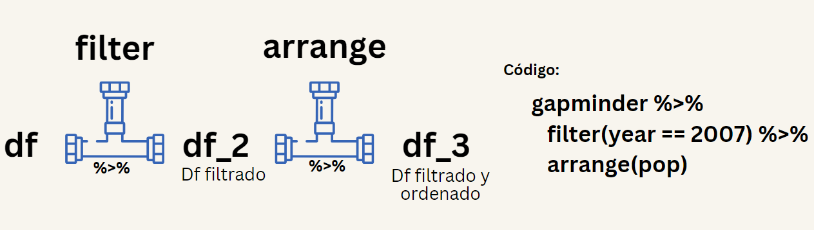
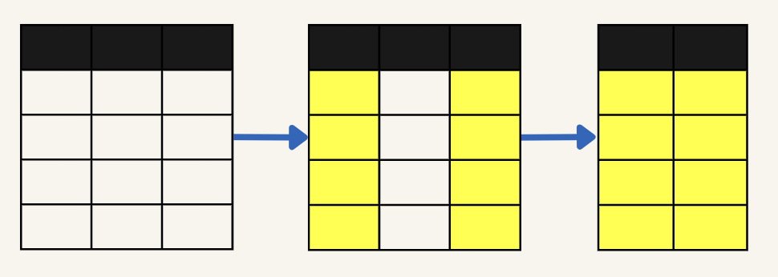
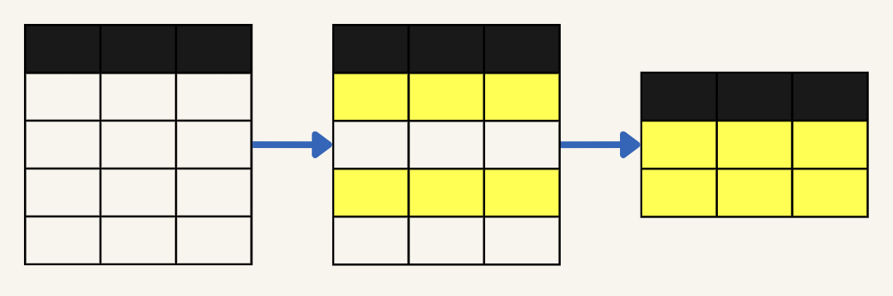
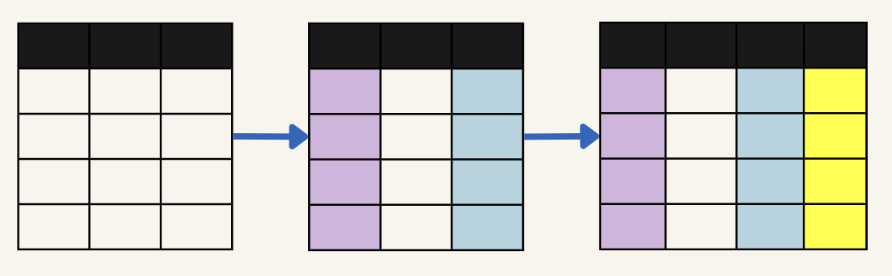

library(WDI)Sesión 2: Manipulación de datos, transformación de variables y resúmenes estadísticos
Objetivos de la sesión de hoy
Aprender a transformar, organizar y resumir datos utilizando las herramientas del paquete dplyr. Incorporar principios estadísticos básicos para la descripción de variables. Reconocer patrones, errores y estructuras dentro de los datos.
El Tidyverse
Base de datos: World Development Indicators (WDI)
El análisis de datos en ciencias sociales requiere acceder a fuentes confiables, comparables y actualizadas. Una de las más utilizadas a nivel global es la World Development Indicators (WDI) del Banco Mundial. Gracias al paquete WDI en R, podemos acceder directamente a esta base de forma automatizada.
En este ejemplo trabajaremos con tres indicadores esenciales para describir y comparar el desarrollo de distintos países:
PIB per cápita (NY.GDP.PCAP.CD)
Esperanza de vida (SP.DYN.LE00.IN)
Población total (SP.POP.TOTL)
La base descargada contiene diversas variables. Para este análisis introductorio, nos centraremos en las siguientes:
| Variable | Descripción |
|---|---|
country |
Nombre del país |
iso2c / iso3c |
Códigos de país (ISO 2 y 3 letras) |
pib_per_capita |
PIB per cápita en dólares actuales (indicador económico) |
esperanza_vida |
Esperanza de vida al nacer (indicador de salud) |
poblacion_total |
Población total (indicador demográfico) |
region |
Región del país según clasificación del Banco Mundial |
income |
Nivel de ingreso del país (bajo, medio, alto, etc.) |
df = WDI(
country = "all",
indicator = c(
pib_capita = "NY.GDP.PCAP.CD",
esp_vida = "SP.DYN.LE00.IN",
poblacion = "SP.POP.TOTL"
),
start = 2014, end = 2024, extra = T
)
Carga de la base de datos
Para acceder a los datos, usamos la función WDI() especificando los indicadores deseados:
Manipulación con dplyr
La manipulación de datos consiste en transformar y preparar los datos para su análisis, lo que puede incluir la creación de nuevas variables, el filtrado de observaciones o la omisión de alguna variable. Para ello, usaremos el paquete dplyr del tidyverse.
dplyr es un paquete del tidyverse diseñado específicamente para la manipulación de datos. Proporciona un conjunto de funciones que permiten seleccionar, filtrar, ordenar, resumir y transformar datos en data.frames.
Una de las características más importantes de dplyr es su uso del pipe operator (%>%), que permite encadenar múltiples operaciones de manera secuencial, pasando el resultado de una función directamente como entrada a la siguiente. Esto hace que el código sea más fácil de leer y mantener.
El atajo del teclado para el pipe operator (%>%) es:
Ctrl + Shift + M (Windows)
Cmd + Shift + M (Mac)
Un sistema de tuberías
Para poder realizar múltiples acciones en secuencia conectando cada acción con la siguiente a través de “tuberías” debemos utilizar lo que se llama el pipe operator (%>%).

Dato
Para poder sacarle el máximo provecho a dplyr debemos conocer las principales funciones:
filter(): Filtra filas de un dataframe según una condición específica.select(): Selecciona columnas específicas de un dataframe.mutate(): Crea nuevas columnas o modifica las existentes en un dataframe.summarize(): Resumen estadístico de las columnas de un dataframe.arrange(): Ordena las filas de un dataframe según una o más variables.group_by(): Agrupa un dataframe por una o más variables, preparándolo para operaciones de resumen.
Para empezar a trabajar con dplyr recuerda primero cargarlo:
# En caso no esté instalado aún
install.packages('dplyr')library(dplyr)A continuación vemos la data completa con todas sus variable usando glimpse()
Rows: 2,926
Columns: 15
$ country <chr> "Afghanistan", "Afghanistan", "Afghanistan", "Afghanistan"…
$ iso2c <chr> "AF", "AF", "AF", "AF", "AF", "AF", "AF", "AF", "AF", "AF"…
$ iso3c <chr> "AFG", "AFG", "AFG", "AFG", "AFG", "AFG", "AFG", "AFG", "A…
$ year <int> 2018, 2015, 2017, 2023, 2021, 2016, 2024, 2020, 2022, 2014…
$ status <chr> "", "", "", "", "", "", "", "", "", "", "", "", "", "", ""…
$ lastupdated <chr> "2025-07-01", "2025-07-01", "2025-07-01", "2025-07-01", "2…
$ pib_capita <dbl> 491, 566, 525, 414, 356, 522, NA, 511, 357, 625, 497, 1522…
$ esp_vida <dbl> 62.4, 62.3, 62.4, 66.0, 60.4, 62.6, NA, 61.5, 65.6, 62.3, …
$ poblacion <dbl> 36743039, 33831764, 35688935, 41454761, 40000412, 34700612…
$ region <chr> "South Asia", "South Asia", "South Asia", "South Asia", "S…
$ capital <chr> "Kabul", "Kabul", "Kabul", "Kabul", "Kabul", "Kabul", "Kab…
$ longitude <chr> "69.1761", "69.1761", "69.1761", "69.1761", "69.1761", "69…
$ latitude <chr> "34.5228", "34.5228", "34.5228", "34.5228", "34.5228", "34…
$ income <chr> "Low income", "Low income", "Low income", "Low income", "L…
$ lending <chr> "IDA", "IDA", "IDA", "IDA", "IDA", "IDA", "IDA", "IDA", "I…Como puedes ver, el conjunto de dato tiene mas variables de las que necesitamos, pero eso tiene solución…
Utilizamos la función select() para filtrar por las columnas que son de nuestro interés.

Seleccionamos únicamente las variables requeridas para nuestro análisis, sobreescribimos el objeto para modificar el original.
df = df %>%
select(country, year, pib_capita,
esp_vida, poblacion, region, income)Esto selecciona solo las variables que hemos especificado
glimpse(df)Rows: 2,926
Columns: 7
$ country <chr> "Afghanistan", "Afghanistan", "Afghanistan", "Afghanistan",…
$ year <int> 2018, 2015, 2017, 2023, 2021, 2016, 2024, 2020, 2022, 2014,…
$ pib_capita <dbl> 491, 566, 525, 414, 356, 522, NA, 511, 357, 625, 497, 1522,…
$ esp_vida <dbl> 62.4, 62.3, 62.4, 66.0, 60.4, 62.6, NA, 61.5, 65.6, 62.3, 6…
$ poblacion <dbl> 36743039, 33831764, 35688935, 41454761, 40000412, 34700612,…
$ region <chr> "South Asia", "South Asia", "South Asia", "South Asia", "So…
$ income <chr> "Low income", "Low income", "Low income", "Low income", "Lo…Echemos un vistazo a la variable $country.
head(unique(df$country), 10)
¿Qué hace este código?
unique()nos permite obtener los valores únicos de una variable, eliminando los repetidos. En este caso, los nombres de países sin duplicados.head()ya la conoces, nos muestra los primeros valores de un vector o tabla. Si le decimosn = 15, nos devuelve solo los primeros 15 (lo limitamos a 15 únicamente por estética de la presentación, lo ideal es que revises todas las categorías posibles)
Al combinarlas, estamos diciendo: Muéstrame los primeros 15 países distintos que aparecen en la columna country.
[1] "Afghanistan" "Africa Eastern and Southern"
[3] "Africa Western and Central" "Albania"
[5] "Algeria" "American Samoa"
[7] "Andorra" "Angola"
[9] "Antigua and Barbuda" "Arab World"
[11] "Argentina" "Armenia"
[13] "Aruba" "Australia"
[15] "Austria" Notaremos que algunos de los “países” listados no son países en sentido estricto, sino regiones agregadas, como “East Asia & Pacific” o “Sub-Saharan Africa”.
Esto puede ser un problema dependiendo del tipo de análisis que queramos hacer.
Por ejemplo:
¿Qué pasa si solo queremos comparar países individuales?
¿O si, por el contrario, queremos hacer una comparación solo entre regiones?
Bueno, podemos utilizar la variable region junto con una función muy útil del paquete dplyr: filter().
La función filter() nos permite seleccionar filas que cumplen con una condición específica.

Filtrar solo países (quitar regiones agregadas)
df = df %>%
filter(region != "Aggregates") También podemos hacer lo contrario: filtrar solo regiones agregadas
agr = df %>%
filter(region == "Aggregates") ¿Y si solo queremos los datos de un año específico?
Muchas veces, especialmente cuando queremos hacer comparaciones entre países o regiones, es útil quedarnos solo con un año.
Esto evita que se mezclen observaciones de distintos años y hace que los gráficos o análisis sean más claros.
Por ejemplo, si queremos trabajar solo con datos del año 2022, podemos aplicar otro filter():
df_22 = df %>%
filter(year == 2022)¿Es posible tener más de una condición?
¡Claro! Podríamos tener también solo las regiones agregadas para ese mismo año.
agr_22 = df %>%
filter(region == "Aggregates",
year == 2022)Ya filtramos la base para quedarnos solo con el año 2022, así que la variable year ya no tiene mucho sentido en este nuevo data.frame, ¿cierto? Todos los valores serían iguales.
df_22 %>%
head() country year pib_capita esp_vida poblacion region
1 Afghanistan 2022 357 65.6 40578842 South Asia
2 Albania 2022 6846 78.8 2777689 Europe & Central Asia
3 Algeria 2022 4962 76.1 45477389 Middle East & North Africa
4 American Samoa 2022 18017 72.8 48342 East Asia & Pacific
5 Andorra 2022 42414 84.0 79705 Europe & Central Asia
6 Angola 2022 2930 64.2 35635029 Sub-Saharan Africa
income
1 Low income
2 Upper middle income
3 Upper middle income
4 High income
5 High income
6 Lower middle incomeEntonces, ¿por qué no quitarla directamente? Podemos hacerlo fácilmente con select() usando el signo menos (-) antes de la variable. Y lo encadenamos todo con pipes %>%:
df_22 = df %>%
filter(year == 2022) %>%
select(-year)df_22 %>%
head(3) country pib_capita esp_vida poblacion region
1 Afghanistan 357 65.6 40578842 South Asia
2 Albania 6846 78.8 2777689 Europe & Central Asia
3 Algeria 4962 76.1 45477389 Middle East & North Africa
income
1 Low income
2 Upper middle income
3 Upper middle incomeA veces queremos saber qué países tienen los valores más altos o más bajos de alguna variable, por ejemplo, el PIB per cápita o la esperanza de vida.
Utilizamos la función arrange() para poder ordenar las observaciones (filas) que tengamos.
Veamos un ejemplo ordenando de mayor a menor el PIB per cápita:
df_22 %>%
arrange(desc(pib_capita)) %>%
head(3) country pib_capita esp_vida poblacion region income
1 Monaco 226052 85.7 38931 Europe & Central Asia High income
2 Liechtenstein 186822 84.1 39493 Europe & Central Asia High income
3 Luxembourg 123720 82.9 653103 Europe & Central Asia High incomeY si queremos los países con el menor PIB per cápita, simplemente quitamos el desc():
df_22 %>%
arrange(pib_capita) %>%
head(3) country pib_capita esp_vida poblacion region
1 Burundi 251 62.9 13321097 Sub-Saharan Africa
2 Afghanistan 357 65.6 40578842 South Asia
3 Central African Republic 467 18.8 5098039 Sub-Saharan Africa
income
1 Low income
2 Low income
3 Low incomeHasta ahora, hemos trabajado filtrando o seleccionando información… Pero, ¿y si quisiéramos crear una nueva variable a partir de una que ya tenemos?
Con mutate(), podemos agregar columnas nuevas a nuestra base de datos, calculadas a partir de otras columnas.

Un caso clásico es transformar el PIB per cápita.
df_22 = df_22 %>%
mutate(
log_pib = log(pib_capita)
)
¿Por qué usamos el logaritmo?
Cuando una variable como el PIB per cápita tiene valores muy dispersos,
los países con ingresos altísimos pueden dominar los gráficos y análisis.
Aplicar una transformación logarítmica nos ayuda a:
- Reducir la influencia de los valores extremos.
- Visualizar mejor las diferencias entre países con ingresos bajos y medios.
- Comparar proporciones en lugar de diferencias absolutas.
Esto crea una nueva columna llamada log_pib, donde hemos guardado el logaritmo del PIB per cápita.
df_22 %>%
select(country, pib_capita, log_pib) %>%
arrange(desc(pib_capita)) %>%
head(3) country pib_capita log_pib
1 Monaco 226052 12.3
2 Liechtenstein 186822 12.1
3 Luxembourg 123720 11.7reframe() nos permite crear una nueva tabla desde una existente. Es ideal para generar resúmenes limpios o cálculos específicos sin necesidad de arrastrar otras columnas.
df_22 %>%
reframe(media_pib = mean(pib_capita, na.rm = TRUE)) media_pib
1 21008Este código nos devuelve un data frame con una sola fila, que simplemente muestra el PIB per cápita promedio de todos los países juntos.
Pero… ¿y si queremos calcularlo por región?
Por ejemplo: ¿qué tal si queremos saber cuál es el PIB promedio de cada región del mundo?
Agrupamos con group_by()
df_22 %>%
group_by(region) %>%
head(3)# A tibble: 3 × 7
# Groups: region [3]
country pib_capita esp_vida poblacion region income log_pib
<chr> <dbl> <dbl> <dbl> <chr> <chr> <dbl>
1 Afghanistan 357. 65.6 40578842 South Asia Low i… 5.88
2 Albania 6846. 78.8 2777689 Europe & Central Asia Upper… 8.83
3 Algeria 4962. 76.1 45477389 Middle East & North … Upper… 8.51Esto no hace nada visible aún, pero le indica a R que toda operación posterior se aplique por separado a cada región.
Podemos aplicar reframe() junto con group_by para obtener el promedio por cada región:
df %>%
group_by(region) %>%
reframe(media_pib = mean(pib_capita, na.rm = TRUE))# A tibble: 7 × 2
region media_pib
<chr> <dbl>
1 East Asia & Pacific 17334.
2 Europe & Central Asia 36010.
3 Latin America & Caribbean 14812.
4 Middle East & North Africa 17081.
5 North America 77112.
6 South Asia 3182.
# ℹ 1 more row |
|| | Por ejemplo, podríamos ver los dos países con mayor esperanza de vida en cada región: |
Combinando filter(), arrange(), select() y group_by() ya podemos hacer consultas bastante útiles.
¿Cuáles son los 3 países con menor esperanza de vida en Europa y Asia Central?
Podemos combinar filtrado, ordenamiento y selección:
df_22 %>%
filter(region == "Europe & Central Asia") %>%
arrange(esp_vida) %>%
select(country, esp_vida) %>%
head(3) country esp_vida
1 Turkmenistan 69.9
2 Greenland 71.5
3 Moldova 71.5¿Cuál es el país más poblado de cada región?
Ahora agrupamos por región, ordenamos dentro de cada grupo y usamos slice_head() para quedarnos con el primer país de cada región (el más poblado):
df_22 %>%
group_by(region) %>%
arrange(desc(poblacion), .by_group = TRUE) %>%
slice_head(n = 1) %>%
select(region, country, poblacion) %>%
arrange(desc(poblacion))# A tibble: 7 × 3
# Groups: region [7]
region country poblacion
<chr> <chr> <dbl>
1 South Asia India 1425423212
2 East Asia & Pacific China 1412175000
3 North America United States 334017321
4 Sub-Saharan Africa Nigeria 223150896
5 Latin America & Caribbean Brazil 210306415
6 Europe & Central Asia Russian Federation 144236933
# ℹ 1 more rowDescripción de variables
A veces tenemos tantas columnas, tantos países, tantos años, que lo primero que necesitamos hacer es explorar, entender. Para eso nos sirve tener una fotografía inicial de los datos.
Dato
R es, en esencia, una herramienta estadística. Y como tal, una de sus fortalezas más importantes está en poder describir datos de manera rápida, flexible y clara.
El paquete dlookr nos da un resumen muy completo de nuestras variables, incluyendo cantidad de valores perdidos, medias, desviaciones estándar, percentiles y más.
library(dlookr)La función diagnose() nos devuelve una tabla muy completa con cada variable. Muy útil para detectar cosas como: Variables con muchos NAs y número de categorías
diagnose(df_22)# A tibble: 7 × 6
variables types missing_count missing_percent unique_count unique_rate
<chr> <chr> <int> <dbl> <int> <dbl>
1 country character 0 0 216 1
2 pib_capita numeric 8 3.70 209 0.968
3 esp_vida numeric 0 0 214 0.991
4 poblacion numeric 0 0 216 1
5 region character 0 0 7 0.0324
6 income character 0 0 5 0.0231
# ℹ 1 more rowPodemos obtener un resumen estadístico general de todas las variables numéricas usando diagnose_numeric(). Seleccionamos solo algunas columnas (la media, mediana y si contiene valores atípicos) para simplificar la visualización.
diagnose_numeric(df_22) %>%
select(variables, mean, median, outlier) variables mean median outlier
1 pib_capita 21008.30 7630.92 15
2 esp_vida 73.08 74.15 1
3 poblacion 36870339.60 6697551.50 23
4 log_pib 9.01 8.94 0Esto nos da una mirada rápida a tres cosas clave: el centro de los datos (media y mediana) y si hay valores que podrían ser extremos (outliers).
De forma similar al caso anterior, con diagnose_category() podemos generar un resumen de las variables categóricas. A continuación, ordenamos las salidas por la frecuencia absoluta de la categoría más común (freq), para ver rápidamente cuáles son las variables más dominadas por una sola categoría. Mostramos solo las primeras 4 filas:
diagnose_category(df_22) %>%
arrange(desc(freq)) %>%
head(4) variables levels N freq ratio rank
1 income High income 216 84 38.9 1
2 region Europe & Central Asia 216 58 26.9 1
3 income Upper middle income 216 54 25.0 2
4 income Lower middle income 216 51 23.6 3El paquete psych nos permite obtener un resumen estadístico detallado de nuestras variables numéricas.
library(psych)Este resumen incluye:
mean: media,sd: desviación estándar,median,minymax,range,skew: asimetría,kurtosis: curtosis,n: número de observaciones válidas.
Resumen para variables seleccionadas:
df_22 %>%
select(pib_capita, esp_vida) %>%
describe() %>%
select(vars, mean, median, skew, kurtosis) vars mean median skew kurtosis
pib_capita 1 21008.3 7630.9 3.03 12.68
esp_vida 2 73.1 74.2 -1.71 8.57La función describeBy() nos permite obtener estadísticas descriptivas para cada grupo de una variable categórica. En este caso, queremos ver cómo varía el PIB per cápita según la región. Para que la tabla sea más clara en la diapositiva, convertimos el resultado en un data.frame, y seleccionamos solo algunas columnas.
describeBy(df_22$pib_capita, group = df_22$region, mat = TRUE) %>%
as.data.frame() %>%
select(group1, n, mean, sd, median, min, max) %>%
arrange(desc(mean)) %>%
head(6) group1 n mean sd median min max
X15 North America 3 85244 33298 77861 56257 121614
X12 Europe & Central Asia 57 40138 43903 25086 1052 226052
X14 Middle East & North Africa 21 19610 23861 4962 616 88701
X11 East Asia & Pacific 36 18211 20919 6616 1158 90299
X13 Latin America & Caribbean 37 16594 16478 11402 1761 92202
X16 South Asia 8 3398 3561 2532 357 11786¿Tienen relación las variables numéricas entre sí? Una forma rápida de explorarlo es usando matrices de correlación. Con la función corr.test() del paquete psych, podemos ver cómo se relacionan entre sí el PIB per cápita, la esperanza de vida y la población:
df_22 %>%
select(log_pib, esp_vida, poblacion) %>%
corr.test()Call:corr.test(x = .)
Correlation matrix
log_pib esp_vida poblacion
log_pib 1.00 0.79 -0.06
esp_vida 0.79 1.00 0.00
poblacion -0.06 0.00 1.00
Sample Size
log_pib esp_vida poblacion
log_pib 208 208 208
esp_vida 208 216 216
poblacion 208 216 216
Probability values (Entries above the diagonal are adjusted for multiple tests.)
log_pib esp_vida poblacion
log_pib 0.00 0.00 0.73
esp_vida 0.00 0.00 0.95
poblacion 0.37 0.95 0.00
To see confidence intervals of the correlations, print with the short=FALSE optionEsto nos da una tabla con:
Coeficientes de correlación de Pearson entre cada par de variables
Significancia estadística (p-values)
Intervalos de confianza
¿Cómo leerlo?
Una correlación cercana a 1 o -1 indica una relación fuerte Una correlación cercana a 0 indica que no hay relación lineal
Lo exploraremos con mayor detalle en la sesión 4.
Además de los paquetes dlookr y psych, que ya vimos y nos permiten realizar diagnósticos y obtener estadísticas útiles, existen otros paquetes como skimr y summarytools que ofrecen resúmenes muy completos e intuitivos de nuestros datos.
Estas herramientas están pensadas para el análisis exploratorio, y funcionan especialmente bien cuando queremos tener una visión rápida, organizada y sistemática de todas las variables. Lo único es que, aunque son excelentes para el análisis, sus salidas no siempre se adaptan bien al espacio visual limitado de una diapositiva. Aun así, son muy recomendables para trabajar en entornos más amplios, como informes en R Markdown o notebooks.
El paquete skimr genera resúmenes estadísticos amigables y detallados, y lo interesante es que también incluye mini-histogramas de cada variable numérica, lo cual ayuda a ver de inmediato cómo se distribuyen los datos.
library(skimr)skim(df_22)Esto genera una tabla con:
Media, mediana, min, max y percentiles,
Porcentaje de datos perdidos,
Y un pequeño histograma de cada variable numérica.
El paquete summarytools tiene una exclente función llamada ctable() para hacer tablas cruzadas de forma sencilla.
library(summarytools)ctable(df_22$region, df_22$income)# Tabla cruzada entre región y un corte en esperanza de vida
df_22 %>%
mutate(grupo_vida = ifelse(esp_vida > 75,
"Alta", "Baja o media")) %>%
with(ctable(region, grupo_vida))